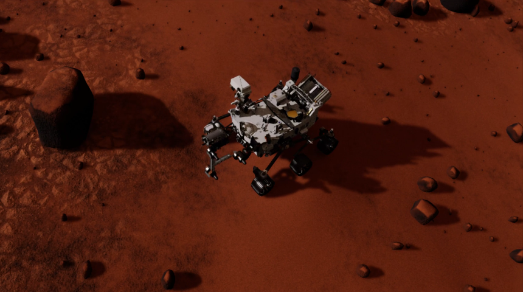
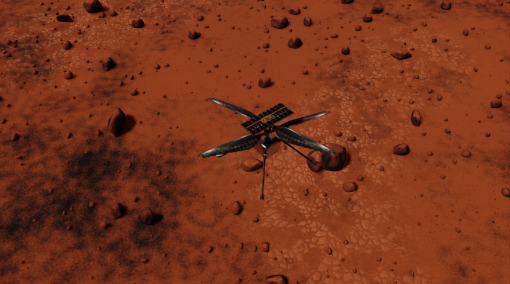
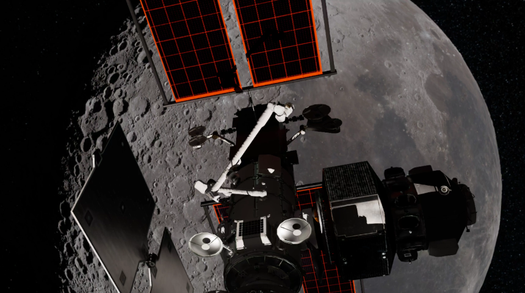
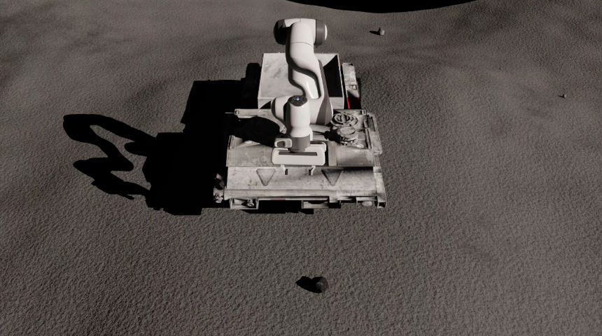
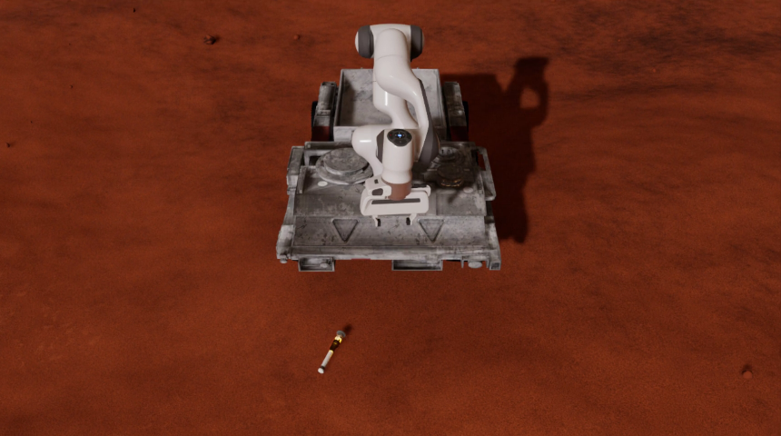
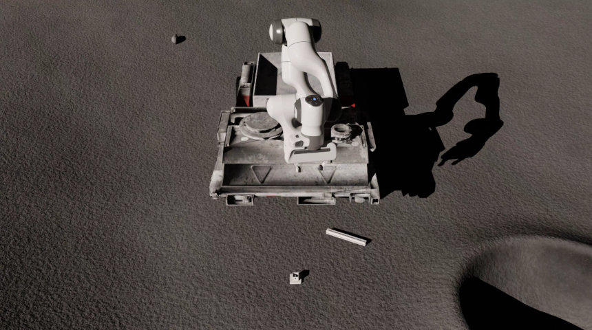
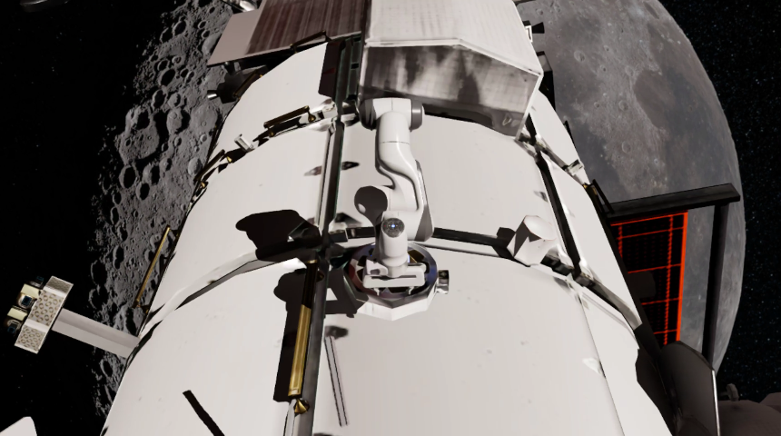
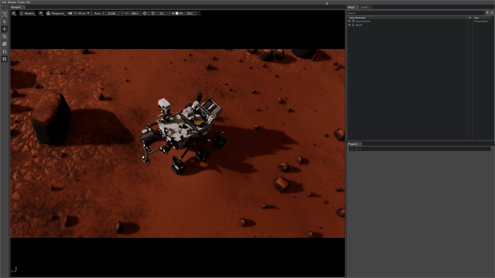
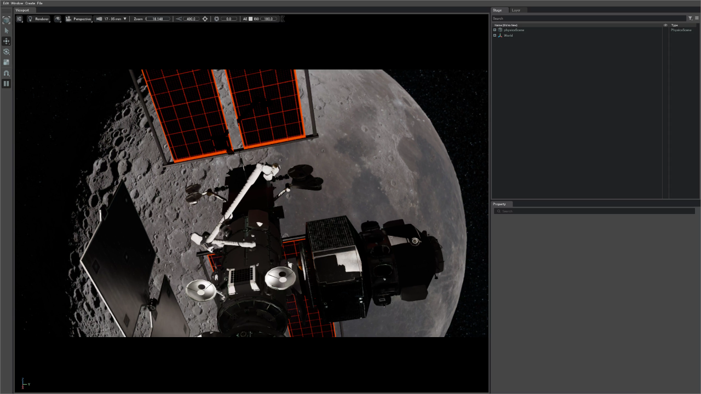
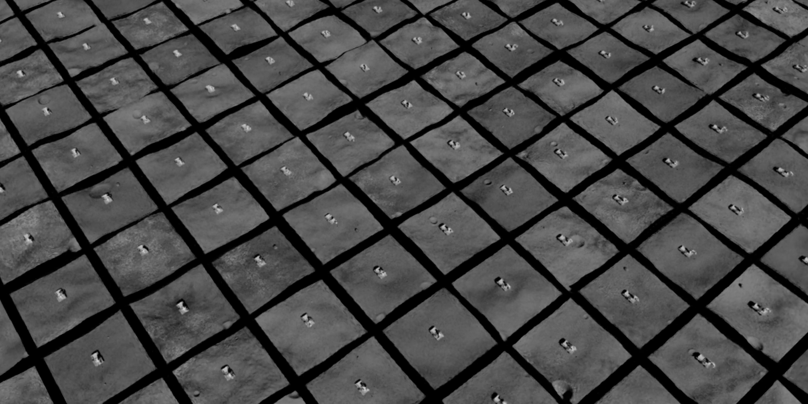

Introduction
The spaceros_procgen_envs package offers a collection of procedurally generated environments designed to bridge the gap between simulated robotics and the vast unpredictability of space.

Key Features
On-Demand Procedural Generation with Blender
This package utilizes the open-source Blender to procedurally generate unique 3D assets for each environment. By doing so, it enables Space ROS developers to simulate a wide range of scenarios, thereby enhancing the robustness and generalization capabilities of their algorithms, without the need to hoard terabytes of static datasets.
Highly-Parallelized Simulation with NVIDIA Isaac Sim
All environments support highly parallel simulation instances, significantly accelerating workflows such as parameter tuning, verification, synthetic data generation, and online learning. The uniqueness of each procedurally generated instance ensures a diverse range of experiences, making it possible to capture edge cases through domain randomization. Furthermore, building on top of Isaac Lab enhances compatibility with a wide array of pre-configured robots and sensors.
Compatibility with Gymnasium API
The package employs a standardized interface through the Gymnasium API, ensuring seamless integration with a broad ecosystem of libraries and tools. This enables developers to leverage popular reinforcement learning and imitation learning algorithms while also simplifying the evaluation and comparison of various solutions across diverse scenarios, giving rise to potential collaborations and benchmarking efforts.
Integration with Space ROS
The package is interoperable with Space ROS and the broader ROS ecosystem, providing access to a rich set of tools and libraries that accelerate the development and deployment of robotic systems. Its compatibility with ROS tooling ensures easy integration into existing workflows. Additionally, it supports multiple parallel instances via namespaced middleware communication, enabling multi-robot operations.
Agnostic Interfaces
The package was designed with abstraction layers to ensure flexibility for various space robotics applications. By adjusting or replacing procedural pipelines, a single task definition can be adapted for use across different robots and planetary or orbital environments. Moreover, the procedural asset generation pipeline is decoupled from the core package, allowing for integration with external frameworks or standalone use.
Diverse Demonstrations
The initial release of the package includes multiple robot-enabled demonstrations in diverse space environments, highlighting the potential of procedural generation and parallel simulation. Additionally, the package features a set of goal-oriented tasks, demonstrating its versatility for developing autonomous decision-making solutions.
Environments
This section provides an overview of the environments currently available in the spaceros_procgen_envs package.
Before using these environments, ensure that you meet the system requirements and have successfully installed the demo, as outlined in the installation guide. Once installation is complete, refer to the usage instructions to learn how to run the environments.
Demos
Perseverance

spaceros_procgen_envs/run.sh ros2 run spaceros_procgen_envs teleop.py --demo perseverance
Ingenuity

spaceros_procgen_envs/run.sh ros2 run spaceros_procgen_envs teleop.py --demo ingenuity
Gateway

spaceros_procgen_envs/run.sh ros2 run spaceros_procgen_envs teleop.py --demo gateway
Tasks
A set of environments that come with an objective for the robot to complete. Each environment instance provides a reward signal that agents must learn to maximize.
Sample Collection (Moon/Mars)
Moon

spaceros_procgen_envs/run.sh -e SPACEROS_DEMO_SCENARIO=moon -e SPACEROS_DEMO_SCENARIO=procedural ros2 run spaceros_procgen_envs teleop.py --demo sample_collection
Mars

spaceros_procgen_envs/run.sh -e SPACEROS_DEMO_SCENARIO=mars -e SPACEROS_DEMO_SCENARIO=dataset ros2 run spaceros_procgen_envs teleop.py --demo sample_collection
Peg-in-Hole (Moon/Mars/Orbit)

spaceros_procgen_envs/run.sh ros2 run spaceros_procgen_envs teleop.py --demo peg_in_hole
Debris Capture (Orbit)

spaceros_procgen_envs/run.sh -e SPACEROS_DEMO_SCENARIO=dataset ros2 run spaceros_procgen_envs teleop.py --demo debris_capture
Note: All environments have two variants (e.g. perseverance and perseverance_visual) that differ in the enabled sensors. The *_visual variant includes camera sensors that provide visual observations at the cost of increased computational requirements.
Procedural Generation
Motivation
Procedural generation is a powerful technique for creating diverse and realistic environments without relying on static, disk-consuming datasets. This approach allows for the generation of an infinite number of unique environments, a feature that has been underutilized in the fields of robotics and space exploration. The spaceros_procgen_envs package seeks to address this gap by offering a versatile framework for procedurally generating 3D assets, which can be combined to create complex environments suitable for the development, training, and validation of space robotic systems.
Approach
The package utilizes Blender to procedurally generate both the geometry and materials (PBR textures) of 3D assets.
Geometry generation is achieved using Blender's Geometry Nodes, a robust node-based system that allows for the creation, manipulation, and modification of arbitrary geometry and data types. First introduced in Blender 2.92 (2021), Geometry Nodes have evolved significantly, supporting the creation of intricate geometries through a series of interconnected node trees. Each node system can consist of multiple node trees that handle different aspects of the geometry. By applying randomness and variation within these node trees, a wide range of unique assets can be produced simply by adjusting the seed value.
Blender's Shader Nodes, which have a longer history, are used to define the appearance of objects through material properties. Like Geometry Nodes, Shader Nodes are also node-based and allow for the creation of complex materials. Blender provides several procedural textures and maps (e.g., Perlin noise, Voronoi, Wave), which can be adjusted and combined to form more sophisticated materials. By integrating randomness into the shader nodes, each procedurally generated asset can have a unique appearance, even with the same underlying geometry.
Workflow
The package includes a blender/procgen_assets.py script that automates the entire procedural generation process, including node construction, modifier application, seeding, texture baking, and model export. This script is fully standalone and interacts with Blender's Python API (bpy) through its binary executable. Although Blender can be used as a Python module via bpy, it is often linked to a specific Python version and has longer release cycles. The standalone script offers more flexibility, allowing it to be used with any Blender version.
Node trees can be generated from Python source files provided as input to the script. The Node To Python addon simplifies the creation of such source code. This addon enables users to design node trees in Blender's graphical interface and convert them into Python code that can be integrated into the procgen_assets.py script. This method allows users to prototype assets interactively within Blender's GUI and then export them into code.
Space ROS
Motivation
ROS has become the de facto standard for developing robotic systems across various environments, including outer space, with the advent of Space ROS. The spaceros_procgen_envs package integrates seamlessly with the Space ROS ecosystem, facilitating the exposure of relevant simulation data to ROS nodes. This integration aims to accelerate the iterative development and testing of space robotic systems.
Approach
Isaac Sim’s computational graph is primarily offloaded to the system’s dedicated NVIDIA GPU, which presents challenges in directly exposing all internal states to the ROS middleware without compromising performance. Instead, the package focuses on exposing the inputs and outputs of each registered Gymnasium environment alongside a fixed global mapping configuration to maintain modularity and flexibility within the simulation architecture.
Workflow
The spaceros_procgen_envs package provides a run_spaceros.py script that spawns a ROS node to interface with the environments. Subscribers, publishers, and services are dynamically created based on the selected environment and global mapping configuration. When running multiple environment instances in parallel, the script automatically assigns different namespaces to inputs and outputs, preventing conflicts. The script also includes additional functionalities, such as simulation reset capabilities.
System Requirements
Hardware Requirements
The hardware requirements for running this simulation are inherited from the Isaac Sim requirements. While it is possible to run the simulation on lower-spec systems than those recommended, performance will be significantly reduced.
| Component | Minimum Requirement |
|---|---|
| Architecture | x86_64 |
| CPU | Anything is "good enough" |
| RAM | 16 GB |
| GPU | NVIDIA GPU with RT Cores (RTX series) |
| VRAM | 4 GB |
| Disk Space | 30 GB |
| Network | 12 GB (for pulling Docker images) |
Software Requirements (Docker)
The following software requirements are essential for running the simulation inside a Docker container. Other operating systems or window managers may work, but significant adjustments may be required.
| Component | Requirement |
|---|---|
| OS | Linux-based distribution (e.g., Ubuntu 22.04/24.04) |
| Window Manager | X11 |
| NVIDIA Driver | 535.183.01 (tested; other versions may work) |
Installation (Docker)
This section provides instructions for running the simulation within a Docker container. Before proceeding, ensure that your system meets the system requirements. If you are using a different operating system, you may need to adjust the following steps accordingly or refer to the official documentation for each step.
1. Install Docker Engine
First, install Docker Engine by following the official installation instructions. You can use the following commands to install Docker on your system:
curl -fsSL https://get.docker.com | sh
sudo systemctl enable --now docker
sudo groupadd docker
sudo usermod -aG docker $USER
newgrp docker
2. Install NVIDIA Container Toolkit
Next, install the NVIDIA Container Toolkit, which is required to enable GPU support for Docker containers. Follow the official installation guide or use the following commands:
curl -fsSL https://nvidia.github.io/libnvidia-container/gpgkey | sudo gpg --dearmor -o /usr/share/keyrings/nvidia-container-toolkit-keyring.gpg && curl -s -L https://nvidia.github.io/libnvidia-container/stable/deb/nvidia-container-toolkit.list | sed 's#deb https://#deb [signed-by=/usr/share/keyrings/nvidia-container-toolkit-keyring.gpg] https://#g' | sudo tee /etc/apt/sources.list.d/nvidia-container-toolkit.list
sudo apt-get update
sudo apt-get install -y nvidia-container-toolkit
sudo nvidia-ctk runtime configure --runtime=docker
sudo systemctl restart docker
3. Gain Access to the Isaac Sim Docker Image
To run the simulation, you need access to the Isaac Sim Docker image, which requires registration and an API key from NVIDIA GPU Cloud (NGC).
3.1 Register and Log In to NVIDIA GPU Cloud (NGC)
Visit the NGC portal and register or log in to your account.
3.2 Generate Your NGC API Key
Follow the official guide to generate your personal NGC API key.
3.3 Log In to NGC via Docker
Once you have your API key, log in to NGC through Docker:
docker login nvcr.io
When prompted for a username, enter $oauthtoken (exactly as shown):
Username: $oauthtoken
When prompted for a password, use the API key you just generated:
Password: <NGC API Key>
4. Build the Docker Image
Now, you can build the Docker image for spaceros_procgen_envs by running the provided build.sh script. Note that the build process may take up to 15 minutes, depending on your network speed.
spaceros_procgen_envs/build.sh
5. Verify the Image Build
To ensure that the image was built successfully, run the following command. You should see the openrobotics/spaceros_procgen_envs image listed among recently created Docker images.
docker images openrobotics/spaceros_procgen_envs
Basic Usage (Docker)
After successfully building the Docker image, you are ready to run the environments provided by this demo. The sections below will guide you through this process using a simple teleoperation demo.
It is strongly recommended that you always use the provided run.sh script when interacting with spaceros_procgen_envs. This script configures the environment automatically and mounts caching volumes. The source code of the demo is also mounted as a volume, which allows you to make code changes in either the host or the container while retaining them. You can optionally provide a command that will be executed immediately inside the container. If no command is specified, you will be dropped into an interactive shell by default. Throughout this documentation, if you omit the spaceros_procgen_envs/run.sh prefix, it assumes that you are already inside the Docker container.
spaceros_procgen_envs/run.sh ${OPTIONAL_CMD}
Verify the Functionality of Isaac Sim
Let's start by verifying that Isaac Sim is functioning correctly:
# Single quotes are required for the tilde (~) to expand correctly inside the container.
spaceros_procgen_envs/run.sh '~/isaac-sim/isaac-sim.sh'
If any issues arise, consult the Troubleshooting section or the official Isaac Sim documentation, as this issue is likely unrelated to the demo.
Journey into the Unknown
Once Isaac Sim is confirmed to be working, you can begin exploring the demos and tasks included with the environments. Let's start with a simple teleoperation demo:
spaceros_procgen_envs/run.sh ros2 run spaceros_procgen_envs teleop.py
After a few moments, Isaac Sim should appear. The window will briefly remain inactive as the assets are procedurally generated in the background. The generation time depends on the complexity of the assets and your hardware, particularly the GPU, which will be used to bake PBR textures. However, future runs will use cached assets, as long as the configuration remains unchanged and the cache is not cleared (see the clean_cache.md).
Eventually, you will be greeted by the Mars Perseverance Rover on a procedurally generated Martian landscape.

At the same time, the terminal will display the following keyboard scheme:
+------------------------------------------------+
| Keyboard Scheme (focus the Isaac Sim window) |
+------------------------------------------------+
+------------------------------------------------+
| Reset: [ L ] |
+------------------------------------------------+
| Planar Motion |
| [ W ] (+X) |
| ↑ |
| | |
| (-Y) [ A ] ← + → [ D ] (+Y) |
| | |
| ↓ |
| [ S ] (-X) |
+------------------------------------------------+
While the Isaac Sim window is in focus, you can control the rover using the W, A, S, and D keys for motion. Use your mouse to navigate the camera. If the rover gets stuck, pressing L will reset its position.
To close the demo, press Ctrl+C in the terminal. This will gracefully shut down the demo, close Isaac Sim, and return you to your host environment.
Increase the Simulation Fidelity
By default, the textures in the environment appear blurry due to the configuration setting the baked texture resolution to 12.5% (default=0.125). This setting allows procedural generation to be faster on low-end hardware. If your hardware is capable, you can increase the resolution by adjusting the detail parameter (see environment configuration):
spaceros_procgen_envs/run.sh -e SPACEROS_DEMO_DETAIL=1.0 ros2 run spaceros_procgen_envs teleop.py
Exploring More
You can explore other demos by using the --demo, --task, or --env arguments (which are interchangeable). A full list of available demos is found in the overview, or you can conveniently list them using this command:
spaceros_procgen_envs/run.sh ros2 run spaceros_procgen_envs list_envs.py
As an example, here is how you can launch a new demo:
spaceros_procgen_envs/run.sh ros2 run spaceros_procgen_envs teleop.py --demo <DEMO>

Parallel Environments
Running environments in parallel can be essential for tasks like:
- Testing the scalability of the system.
- Collecting synthetic data.
- Training reinforcement learning agents efficiently by leveraging multiple environments.

The --num_envs Argument
The teleop.py script accepts an optional --num_envs argument. By default, this is set to 1, but you can specify more environments for parallel execution. For example, to run four environments, use the following command:
spaceros_procgen_envs/run.sh ros2 run spaceros_procgen_envs teleop.py --task sample_collection --num_envs 4
Each environment will generate its own procedural assets, providing unique experiences across different simulations. However, note that the time taken to generate these assets scales linearly with the number of environments. These assets will be cached for future runs unless the cache is cleared (explained later in this document).
After the environments are initialized, they can be controlled in sync using the same keyboard scheme displayed in the terminal.
Using Random and Zero Agents
Instead of manually controlling each environment, there are options to automate the process using agents. This is useful for testing whether environments function as expected.
Random Agents
The agent_random.py script allows environments to act based on random actions sampled from the action space. This is particularly useful for verifying if environments are running as intended without manual control:
spaceros_procgen_envs/run.sh ros2 run spaceros_procgen_envs agent_random.py --task sample_collection --num_envs 4
Zero Agents
Alternatively, agent_zero.py executes environments where all actions are zero-valued, mimicking a steady-state system. This can be useful for analyzing the idle behavior of environments:
spaceros_procgen_envs/run.sh ros2 run spaceros_procgen_envs agent_zero.py --task sample_collection --num_envs 4
Both agent scripts (agent_random.py and agent_zero.py) share the same core arguments as teleop.py, with the primary difference being that they do not require teleoperation interfaces.
Space ROS Integration
After understanding the basic usage and running parallel environments, we now explore how to integrate these environments with Space ROS, enabling control of the robots and data collection over ROS topics.
Single Environment
The run_spaceros.py script is the primary entry point for interfacing with the environments through Space ROS. This script spawns a single ROS node that maps inputs and outputs for the environment and provides miscellaneous functionalities such as resetting the simulation. Here is an example using the Ingenuity demo:
spaceros_procgen_envs/run.sh ros2 run spaceros_procgen_envs run_spaceros.py --demo ingenuity
Once the environment is initialized, open a new terminal to inspect the available ROS topics. You can either use your ROS setup or join the running Docker container with the join.sh script:
spaceros_procgen_envs/join.sh
Now, list the available ROS topics:
ros2 topic list
# Expected output:
# /clock
# /env/info
# /env/reward
# /env/terminated
# /env/truncated
# /parameter_events
# /robot/cmd_vel
# /rosout
# /tf
To control the robot, publish a Twist message to the /robot/cmd_vel topic:
ros2 topic pub --once /robot/cmd_vel geometry_msgs/msg/Twist '{linear: {x: 1.0}}'
You can reset the simulation by calling the /sim/reset service:
ros2 service call /sim/reset std_srvs/srv/Empty
Parallel Environments
You can run multiple environments in parallel by using the --num_envs argument. Each environment will map to its own ROS namespace. For example, try running the Ingenuity demo with 4 environments:
spaceros_procgen_envs/run.sh ros2 run spaceros_procgen_envs run_spaceros.py --demo ingenuity --num_envs 4
List the available ROS topics again:
ros2 topic list
# Expected output:
# /clock
# /env0/reward
# /env0/robot/cmd_vel
# /env0/terminated
# /env0/truncated
# /env1/reward
# /env1/robot/cmd_vel
# /env1/terminated
# /env1/truncated
# /env2/reward
# /env2/robot/cmd_vel
# /env2/terminated
# /env2/truncated
# /env3/reward
# /env3/robot/cmd_vel
# /env3/terminated
# /env3/truncated
# /envs/info
# /envs/robot/cmd_vel
# /parameter_events
# /rosout
# /tf
Each environment has its own namespace, allowing individual control. For example:
ros2 topic pub --once /env0/robot/cmd_vel geometry_msgs/msg/Twist '{linear: {x: -1.0}}'
ros2 topic pub --once /env1/robot/cmd_vel geometry_msgs/msg/Twist '{linear: {x: 1.0}}'
ros2 topic pub --once /env2/robot/cmd_vel geometry_msgs/msg/Twist '{linear: {y: -1.0}}'
ros2 topic pub --once /env3/robot/cmd_vel geometry_msgs/msg/Twist '{linear: {y: 1.0}}'
Launch with rviz2 and teleop_twist_keyboard
For convenience, you can launch rviz2 alongside run_spaceros.py and teleop_twist_keyboard for visualization and control via keyboard:
spaceros_procgen_envs/run.sh ros2 launch spaceros_procgen_envs demo.launch.py task:=ingenuity_visual num_envs:=4

Configuration
Environment Configuration
The environments in Space ROS can be configured in two ways:
- Modifying the
configs/env.yamlfile. - Using environment variables.
The default configuration file (configs/env.yaml) contains various settings that control the seed, scenario, level of detail, and options for assets (robot, object, terrain, vehicle).
Example env.yaml:
seed: 42 # SPACEROS_DEMO_SEED [int]
scenario: moon # SPACEROS_DEMO_SCENARIO [mars, moon, orbit]
detail: 0.125 # SPACEROS_DEMO_DETAIL [float]
assets:
robot:
variant: dataset # SPACEROS_DEMO_ASSETS_ROBOT_VARIANT [dataset]
object:
variant: procedural # SPACEROS_DEMO_ASSETS_OBJECT_VARIANT [primitive, dataset, procedural]
terrain:
variant: procedural # SPACEROS_DEMO_ASSETS_TERRAIN_VARIANT [none, primitive, dataset, procedural]
vehicle:
variant: dataset # SPACEROS_DEMO_ASSETS_VEHICLE_VARIANT [none, dataset]
Setting Configuration via Environment Variables
To override specific values from the configuration file, environment variables can be passed during execution using the run.sh script. For instance:
spaceros_procgen_envs/run.sh -e SPACEROS_DEMO_DETAIL=1.0 -e SPACEROS_DEMO_SCENARIO=mars ros2 run spaceros_procgen_envs ...
This command sets the environment detail level to 1.0 and the scenario to mars.
CLI Arguments
The following arguments are common across all entrypoint scripts (teleop.py, agent_random.py, agent_zero.py, run_spaceros.py):
-h,--help: Display the help message and exit.--task TASK,--demo TASK,--env TASK: Specify the name of the task or environment. You can list available tasks usinglist_envs.py.--num_envs NUM_ENVS: Number of parallel environments to simulate.--disable_ui: Disable the majority of the Isaac Sim UI.--headless: Force the display to remain off, making the simulation headless.--device DEVICE: Set the device for simulation (e.g.,"cpu","cuda", or"cuda:N"whereNis the device ID).
Additional Environment Variables
SPACEROS_DEMO_SKIP_REGISTRATION
By setting this to "true" or 1, you can skip registering environments with the Gymnasium registry. This can be useful in specific deployment or testing scenarios.
Cleaning the Assets Cache
After running several demos or simulations, the procedurally generated assets (such as textures and meshes) can accumulate in the cache. To free up disk space, you can clean this cache:
spaceros_procgen_envs/run.sh ros2 run spaceros_procgen_envs clean_procgen_cache.py
If you're also using Docker and wish to remove the corresponding image, run:
docker rmi openrobotics/spaceros_procgen_envs
Development Workflows
The spaceros_procgen_envs package is based around using Docker, which in itself provides an isolated development environments. Using the run.sh script already mounts the source code of the demo into the container, which in itself already makes the Docker setup quqite convenient for development. However, the following workflows are also available.
Dev Containers
Dev Containers allow for a fully isolated development environment tailored to specific project needs. This is particularly useful for ensuring all dependencies are installed and consistent across different development machines.
-
Dev Containers Introduction:
- The repository includes preconfigured settings for Dev Containers, which are development environments hosted within Docker containers. These containers make it easy to manage dependencies and ensure that the development environment is fully consistent across various setups.
-
Modifying the Dev Container:
- You can customize the included
.devcontainer/devcontainer.jsonfile to suit specific project or development needs. This configuration file controls aspects such as base images, development tools, extensions, and environment variables within the container.
- You can customize the included
-
Opening the Repository in a Dev Container:
- To simplify the process of building and opening the repository as a Dev Container in Visual Studio Code (VS Code), an automated script is available. Running the following command will set up the containerized environment and open it in VS Code:
spaceros_procgen_envs/.devcontainer/open.sh
Adding New Environments
To introduce a new environment into the spaceros_procgen_envs package, the process is straightforward and modular. Here’s a step-by-step guide:
-
Duplicate an Existing Environment:
- Navigate to the
spaceros_procgen_envs/tasksdirectory, which houses the existing environments. - Copy one of the existing demo or task folders (e.g.,
sample_collectionor one that resembles your desired task/demo more) and rename it to the name of your new environment.
- Navigate to the
-
Modify the Environment Configuration:
- After duplicating, customize your new environment by altering the configuration files and task implementation code within the folder. This may include asset selection, interaction rules, or specific environmental dynamics.
- Any changes can be made to the environment’s configuration, asset generation, or task-specific code depending on the desired functionality and behavior.
-
Automatic Registration:
- The new environment will be automatically detected by the
spaceros_procgen_envspackage due to its presence in thetasksdirectory. The environment will be registered under the directory name you assigned during the duplication process. - There is no need for manual registration, as the system dynamically loads environments based on the folder structure.
- The new environment will be automatically detected by the
-
Running Your New Environment:
- To run or test the new environment, you can invoke it using the same commands as existing environments, specifying the name of your new environment (task) in the
--taskargument.
- To run or test the new environment, you can invoke it using the same commands as existing environments, specifying the name of your new environment (task) in the
Attributions
All modifications to the listed assets, unless stated otherwise, involve non-destructive transformations, mesh simplification, conversion to the Universal Scene Description (USD) format, rigging, and application of USD APIs for integration purposes.
- Mars Perseverance Rover, 3D Model by NASA.
- Mars Ingenuity Helicopter, 3D Model by NASA.
- Mars 2020 Sample Tube, 3D Model by NASA. This mesh was modified to include a cap, and additional materials were added.
- Gateway Core, 3D Model by NASA. The model was separated into individual assets: Canadarm3 (small and large) and the Gateway Core itself.
- Low Lunar Orbit, HDR Image by NASA. This image was rotated by 90 degrees to better align with the implemented environment.
- Lunar Rover from the Movie Moon, 3D Model by Watndit, licensed under Creative Commons Attribution. The original model was heavily remodeled and retextured, with significant parts of the geometry removed. The wheels were replaced with a model from NASA's Curiosity Rover, 3D Model.
Troubleshooting
Runtime Errors
Driver Incompatibility
If you encounter the following error message:
[Error] [carb.graphics-vulkan.plugin] VkResult: ERROR_INCOMPATIBLE_DRIVER
This indicates that your NVIDIA driver is incompatible with Omniverse. To resolve the issue, update your NVIDIA driver according to the Isaac Sim driver requirements.
Unexpected Behavior
Teleoperation Stuck
During teleoperation, if you change your window focus, Omniverse may fail to register a button release, causing the robot to continuously move in one direction. To fix this, press the L key to reset the environment.